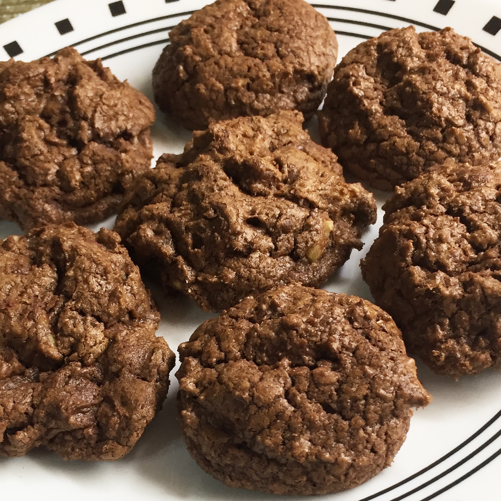

Chocolate Chip Cookies

Description
These chocolate chip cookies are great...
you get a double dose of deliciousness! This recipe takes
45 minutes to complete and yields 48 cookies!
Ingredients
- 1 ½ cups white sugar
- 1 cup butter, softened
- 2 eggs
- 2 teaspoons vanilla extract
- 2 cups all-purpose flour
- ⅔ cup cocoa powder
- ¾ teaspoon baking soda
- ¼ teaspoon salt
- 2 cups semisweet chocolate chips
Directions
- Preheat the oven to 175 degrees C
- Beat sugar, butter, eggs, and vanilla in a large bowl
until light and fluffy
- Combine flour, cocoa powder, baking soda, and salt in
another bowl; stir into the butter mixture until well blended.
Mix in chocolate chips and walnuts. Drop by rounded teaspoonfuls
onto ungreased cookie sheets.
- Bake in the preheated oven just until set, 8 to 10 minutes.
Cool slightly on the cookie sheets before transferring to
wire racks to cool completely.